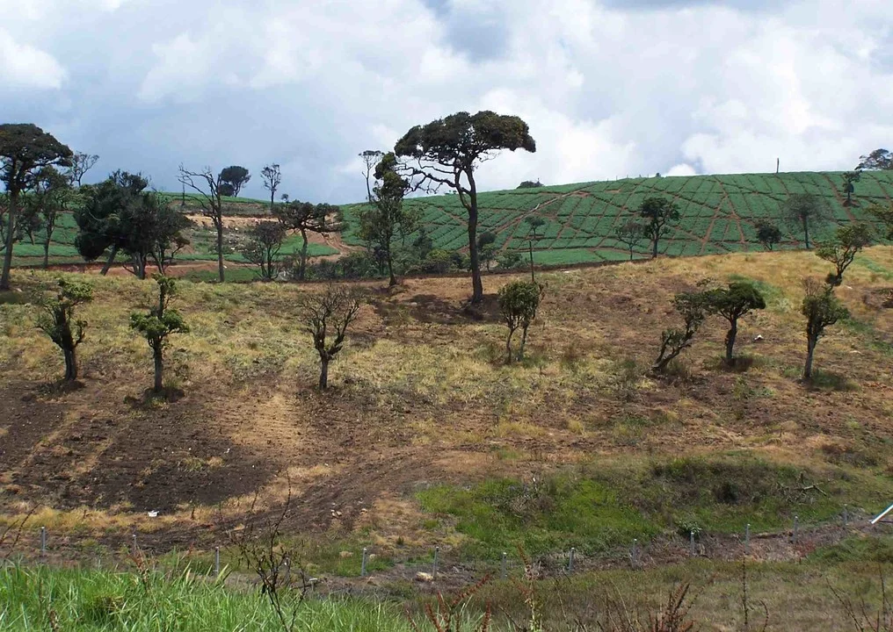

Learning from Living Ecosystems
Analog forestry is an ecological restoration approach pioneered by Sri Lankan ecologist Dr. Ranil Senanayake. It focuses on developing biodiverse forest systems inspired by the structure and ecological functions of natural forests.
Analog Forestry: Learning from Living Ecosystems
Analog forestry is an ecological restoration approach pioneered by Sri Lankan ecologist Dr. Ranil Senanayake. It focuses on developing biodiverse forest systems inspired by the structure and ecological functions of natural forests. The approach aims to restore habitat diversity, ecological relationships and landscape functions while recognising the importance of local environmental conditions and community livelihoods.
AQUAE Impact’s work in this area connects ecological understanding with ecosystem assessment and the valuation of environmental services.
Structural & Functional Mimicry
Inspired by the canopy architecture and ecological relationships of mature natural forests.
Community & Landscape Value
Recognises local environmental conditions, biodiversity habitats, and sustainable livelihoods.

Biodiverse forest regeneration inspired by natural climax ecosystems

Belipola Arboretum, Sri Lanka
Established by Dr. Ranil Senanayake in the early 1980s, Belipola Arboretum is recognised as the world's first analog forest. Located in Sri Lanka's central highlands, it represents a pioneering example of ecological restoration through the application of analog forestry principles.
Developed on previously degraded tea plantation land, Belipola demonstrates how forest systems can be regenerated by drawing on the structure, diversity and ecological processes of natural forests.
The site’s relevance to AQUAE Labs work lies in the opportunity to study ecosystem services, document ecological characteristics and examine how assessment and valuation methodologies can be applied to real landscapes.
From Restoration to Assessment
Measuring Ecosystem Services
Restoration and conservation activities are assessed through the measurement of ecosystem services. Field data and ecological analysis help document changes in biomass, water-related functions, soil condition, microclimate and biodiversity.
Informing Valuation & ALCI Credits
These findings can inform landscape valuation and the assessment of potential ALCI Credit development, where supported by the available evidence and applicable methodology.
Site Conditions & Transparent Evidence
Ecological outcomes depend on site conditions, management practices, monitoring and long-term stewardship. Published figures on ecosystem service value, project performance or potential credits should be supported by documented evidence, with assumptions and limitations clearly stated.